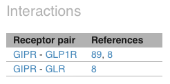

Welcome to the GPCR Interaction Network Visualizer!
This web site has been designed to visualize GPCR interaction networks. We distinguish between two types of interaction networks: HetNet and NonHetNet. In the former each receptor is a network node and every line between two receptor means that these two connected receptors interact between them according to consulted literature. In the latter network, however, every dotted line means that the two connected receptors does not interact. In the site you can visualize one of these two networks by clicking on the buttons that appear in the top-left panel as you can see below.
You might also be interested in seeing the interaction and non-interactions of a specific receptor (let's call it the target receptor). We provide you two ways to achieve this.
In both cases a new subnetwork is drawn in which the target receptor and its interactions/non-interactions are shown.
The site also contains three other panels. In the bottom-left panel we show the map between receptor families and network node colours. In the bottom-right corner we provide some topological properties of the network being shown.
The top-right panel is not always visible. It only provides information about a subnetwork for a given target receptor. For every receptor in the subnetwork we enlist the bibliographic references that claim the fact that it does/doesn't interact with the target receptor.
For instance, the image above shows the reference list in the HetNet subnetwork for receptor GIPR.